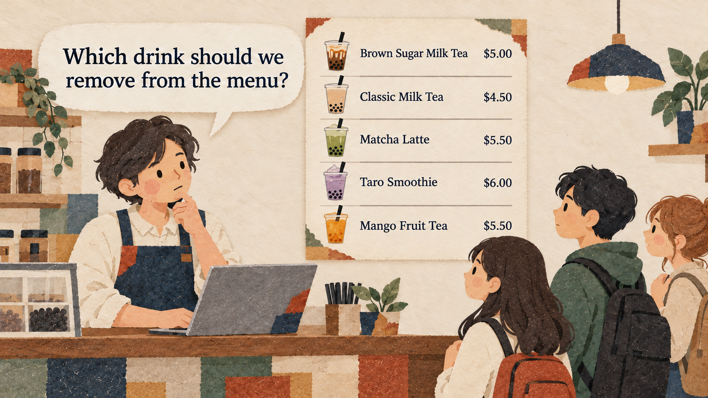

Root problem
The lunch line is too long
- Many students arrive at lunch at the same time.
- Staff must prepare five different drinks, so each order takes longer.
- Customers wait too long for their drinks.

Root problem: the lunch line at Mina's bubble tea shop is too long.
Learn how to give business data to an AI tool so it reads the data correctly.
Fictional data created for this class. File: data/session_2_1_bubble_tea_sales.csv
| drink | cups_sold | price_per_cup_USD | ingredient_cost_per_cup_USD |
|---|---|---|---|
| Brown Sugar Milk Tea | 420 | 5.00 | 2.40 |
| Classic Milk Tea | 380 | 4.50 | 1.60 |
| Matcha Latte | 160 | 5.50 | 2.10 |
| Taro Smoothie | 110 | 6.00 | 4.80 |
| Mango Fruit Tea | 80 | 5.50 | 1.30 |
USD means United States dollars. Every value is per cup, except cups_sold, which is the total for the week.
Before you ask an AI to analyze sales, know what the numbers mean. Example: one cup of Brown Sugar Milk Tea.
What one customer pays for one cup.
$5.00
What the shop pays for the tea, milk, sugar, and cup used to make one cup.
$2.40
All the money customers paid.
Revenue = cups sold x price
420 x $5.00 = $2,100.00
Revenue is not the money the shop keeps. Ingredients still have to be paid for.
This is the measure Mina needs. It is the key idea of this session.
Gross profit per cup = price - ingredient cost
$5.00 - $2.40 = $2.60 per cup
Weekly gross profit = cups sold x gross profit per cup
420 x $2.60 = $1,092.00
Compare two drinks from the table.
| Drink | Cups sold | Gross profit per cup | Weekly gross profit |
|---|---|---|---|
| Mango Fruit Tea | 80 (fewest) | $4.20 (highest) | $336.00 |
| Taro Smoothie | 110 | $1.20 (lowest) | $132.00 (lowest) |
When a question gives no rule for deciding, AI often uses the easiest number to see. The question was incomplete.
Same bubble tea data. Compare what the prompt asks for.
Here is my bubble tea shop's sales data for one week. Which drink should I remove from the menu? drink,cups_sold,price_per_cup_USD,ingredient_cost_per_cup_USD Brown Sugar Milk Tea,420,5.00,2.40 Classic Milk Tea,380,4.50,1.60 Matcha Latte,160,5.50,2.10 Taro Smoothie,110,6.00,4.80 Mango Fruit Tea,80,5.50,1.30
"Remove Mango Fruit Tea because it has the lowest sales."
Same bubble tea data. Compare what the prompt asks for.
Calculate the profit of each drink and give me the exact answer. drink,cups_sold,price_per_cup_USD,ingredient_cost_per_cup_USD Brown Sugar Milk Tea,420,5.00,2.40 Classic Milk Tea,380,4.50,1.60 Matcha Latte,160,5.50,2.10 Taro Smoothie,110,6.00,4.80 Mango Fruit Tea,80,5.50,1.30
Some answers call revenue "profit." Other answers invent rent or wage costs that are not in the data.
Steps 1 and 2. Copy this prompt exactly.
I run a small bubble tea shop. Below is one week of sales data. What each column means: - cups_sold: number of cups sold this week - price_per_cup_USD: what one customer pays for one cup, in US dollars - ingredient_cost_per_cup_USD: cost of the ingredients for one cup, in US dollars Use these definitions: - Revenue = cups_sold x price_per_cup_USD - Gross profit per cup = price_per_cup_USD - ingredient_cost_per_cup_USD - Weekly gross profit = cups_sold x gross profit per cup Gross profit does not include rent or staff wages. Make a table with these columns: drink, cups_sold, revenue, gross profit per cup, weekly gross profit. Sort the table by weekly gross profit, from highest to lowest. Show the calculation for the Taro Smoothie row so I can check it. Do not recommend anything yet. drink,cups_sold,price_per_cup_USD,ingredient_cost_per_cup_USD Brown Sugar Milk Tea,420,5.00,2.40 Classic Milk Tea,380,4.50,1.60 Matcha Latte,160,5.50,2.10 Taro Smoothie,110,6.00,4.80 Mango Fruit Tea,80,5.50,1.30
Each part of the prompt solves one problem.
Step 3, sent in the same chat after Improved Prompt 1. Copy this prompt exactly.
I checked your table with a calculator. Weekly gross profit is: Brown Sugar Milk Tea $1,092.00, Classic Milk Tea $1,102.00, Matcha Latte $544.00, Taro Smoothie $132.00, Mango Fruit Tea $336.00. My goal: remove one drink to make the lunch line shorter, while losing as little weekly gross profit as possible. Answer in three parts: 1. Facts: what the table shows. Use only the numbers above. 2. Guesses: what you are assuming that the data does not show. 3. Recommendation: which drink to remove, in one sentence, and why. Then explain in two sentences why "remove the drink with the lowest sales" is a weak rule for this shop.
Each part of the prompt solves one problem.
Guided practice. Follow the five steps in order.
Use this table to check the AI. Sorted from highest to lowest weekly gross profit.
| Drink | Revenue | Gross profit per cup | Weekly gross profit |
|---|---|---|---|
| Classic Milk Tea | $1,710.00 | $2.90 | $1,102.00 |
| Brown Sugar Milk Tea | $2,100.00 | $2.60 | $1,092.00 |
| Matcha Latte | $880.00 | $3.40 | $544.00 |
| Mango Fruit Tea | $440.00 | $4.20 | $336.00 |
| Taro Smoothie | $660.00 | $1.20 | $132.00 |
Notice: Brown Sugar Milk Tea has the highest revenue, but Classic Milk Tea has the highest weekly gross profit.
The price of milk goes up. Does Mina's decision still hold?
Continue with the same sales data and the same definitions. One thing has changed: [what changed, which drinks, and by how much]. Recalculate [which values] and show the new table sorted by [which column]. Show the calculation for the [drink name] row so I can check it. Then answer: should I still remove [drink name]? Separate facts and guesses, and give a one-sentence recommendation.
In the chat from Exercise 1, copy and send this completed prompt.
Continue with the same sales data and the same definitions. One thing has changed: the ingredient cost of Brown Sugar Milk Tea, Classic Milk Tea, Matcha Latte, and Taro Smoothie rose by $0.50 per cup. Mango Fruit Tea did not change. Recalculate gross profit per cup and weekly gross profit, and show the new table sorted by weekly gross profit, from highest to lowest. Show the calculation for the Taro Smoothie row so I can check it. Then answer: should I still remove Taro Smoothie? Separate facts and guesses, and give a one-sentence recommendation.
$6.00 - $5.30 = $0.70 per cup
110 x $0.70 = $77.00
Mina's friend says: "Do not remove Taro Smoothie. Raise its price from $6.00 to $7.00 instead."
$7.00 - $5.30 = $1.70 per cup
110 x $1.70 = $187.00
Use Report_template.docx in Microsoft Word. Save it as FirstName_StudentID_W5_Keyword.docx and upload it to iLearn by 23:59 on class day.
Check your report before you hand it in.